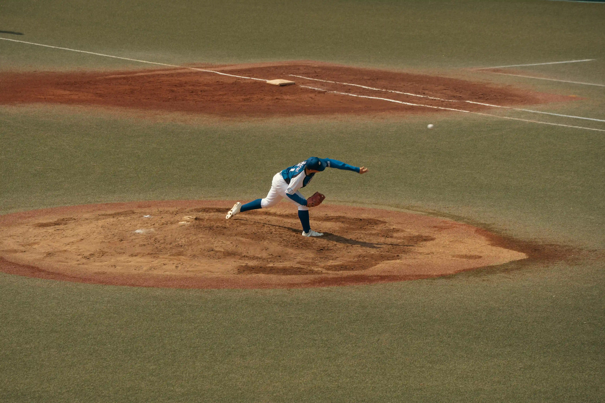

I have been away for so long that it feels weird to be writing about it. Never been so detached from my hobbies and likings than in the past few months. No writings, no readings, no movie watching, absolutely nothing going at all. Except for work. I have become a constant journeyman from my room to office and back every day for the past 3 months.
I do not know why I allowed it to happen. I started my job back in November 2025 and for a few weeks, it was pretty chill with training and normal work schedule. Then suddenly I became a tenured teammate in the office and was working independently. Overtime was expected in crunch situations. I did not feel anything in the beginning but then I kept doing OT consistently. Extending shifts and logging in on weekoffs.
Now this post is not about how I am being exploited at my workplace. It is a top tier MNC with proper guidance and extra pay for every minute of OT I have done. It doesn't feel bad, the extra cash helps me a lot, especially since I am just getting started with a newbie career.
This is instead about time. Fast. It just goes away. Days, weeks, and now months. I used to think about how I would survive 6 months here so I could become a permanent employee and will have breathing space to think about my future prospects. Now in hindsight, 6 months is nothing. It has come to pass so quickly I am unable to comprehend if it's real.
I haven't been home for 6 months now. It felt pretty rough at first, I was consistently homesick. Now it kind of feels normal. “I need to earn so it's a sacrifice" my mind recalls usually when I think of home. 6 months away from my family with whom I have been glued to for 23 years straight. And it is especially mind boggling when I consider how quickly these months have gone by and have become my past.
It will continue to happen. The more I put in the work chasing cash believing I need to give my family the life they deserve, the more time will continue to take a swipe at me. It really puts into perspective how unforgiving modern life is and will be in the future. There is no respite.
It is scary because it is the truth of life. I do not know if it has always been like this but modern life is so fast it will simply pass if I let it be. This is both unsettling and soothing at the same moment in time.
“It will pass.” Yes, but that is the point. It will pass without me having lived it. I really do now understand the importance of being in the moment spending and cherishing time with my loved ones to the fullest. Its significance cannot be overstated. I have learned so much about my life and my place in this world in these 6 months.
It is a learning curve and while I accept the realities of life, it still haunts me how quickly somebody can go down a path without much thinking about it. I have people around me in the office who are ever so nonchalant about the work they do. For them it's more about getting through the day, that’s all. For me it is very different. I take every day as an opportunity to do good and excel at whatever is in front of me but sometimes I cannot help question myself why I also cannot be just as indifferent as the people I see.
My life is always more important than the work I am engaged in, that is clear to me. My own presence and wellbeing will always come first. Unfortunately, my colleagues somehow understand this much better than I do. Being diligent only ever brings so much, and I am starting to feel I will burn myself out if I continue on like this.
I want to go home. Soon. I will go home. I miss my routine life but it cannot always be the same. I have lost so much ground in the past few months. I do not want to look back at this time and regret that I left my hobbies and wellbeing in the dust to excel at work which ultimately is not all that much.
It is indeed also true that the classroom can only teach us so much. There is such a low ceiling to it that my first work experience has genuinely taught me more about life than the 15 years of academics. I just wished to put my thoughts into writing so I can dig deep into them and accept that they are real. I do not wish to disconnect with my true self. I will continue to work hard but I will not allow myself to be left thinking where did all the time go.
If you are a young professional like me, I hope you will find enough space in your life to sit down and relax. Get enough time to enjoy what you love to do and go home every once in a while even when life continues to throw curveballs. You can make it big without sacrificing the already big things you have in your life. Go take a shot at it.
Tagged: Life Updates
← Back to the blog